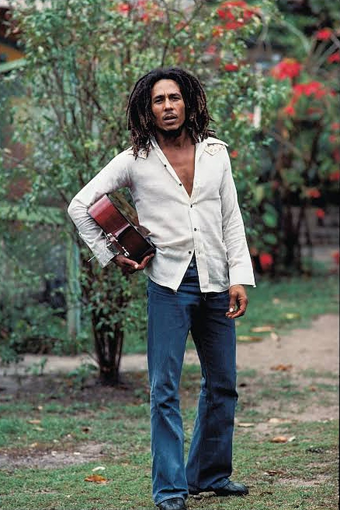
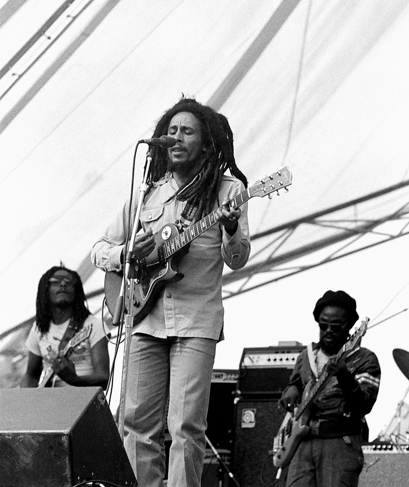
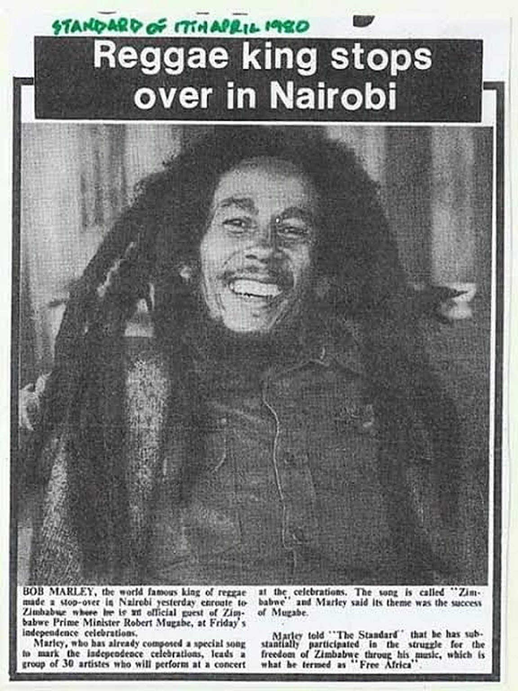

Did Bob Marley's locks come from Kenya?
The hairstyle the world reads as reggae has a Kenyan chapter in its story. Flavor Roots Issue 02 follows the locks from Kingston to the Mau Mau forests and back, and separates what's true from what's legend.

Say the word “dreadlocks” almost anywhere on earth and the picture that comes to mind is Bob Marley, guitar in hand, locks swinging. Ask where that look comes from and you'll often hear a neat answer: Jamaica's Rastas copied it from Kenya's Mau Mau freedom fighters. It's a story we love to tell here. It's also too simple. The real history is messier, and much more interesting.
First, a reminder: locked hair is far older than any of this. Archaeologists have found ancient Egyptian remains and art showing locked and braided hair, and the style has deep roots in many cultures. What this story is about is something more specific: how locks became the symbol of a Jamaican faith, and then of reggae, and how Kenya fits in.
The look · 1960s–1970sThe face of the locks
Bob Marley was raised Catholic, but in the 1960s he was drawn to Rastafari, the faith that emerged in Jamaica in the 1930s around Ethiopia's Emperor Haile Selassie. After returning home from a spell in the United States, he formally embraced it and began to grow his locks.
Through the 1970s, Marley's music carried reggae, and Rastafari with it, to audiences across the world. Locks went with them, from Kingston's yards to stages, album covers and, eventually, fashion runways. That's why, for most people, the story of locks starts with him. It doesn't.

Before the locks · late 1940sRasta didn't start with locks
The first generation of Rastas didn't wear locks at all. They grew beards and kept their hair combed. The change came from the inside, from a militant group of young Rastas in Kingston known as the Youth Black Faith, which emerged in the late 1940s. They rejected anything that looked like conforming to colonial society, and growing their hair out, uncombed and uncut, became part of that refusal.
It didn't happen all at once. For years the movement was divided between the “House of Dreadlocks” and the “House of Combsomes”, the Rastas who still combed their hair. The late Jamaican anthropologist Barry Chevannes, who interviewed early members of the movement and is regarded as one of the leading authorities on its history, placed the start of the locks with the Youth Black Faith in this period.
That date matters. It means the first Rasta locks appear to have come before Kenya's war made headlines around the world.

Meanwhile in Kenya · 1952Locks grown in the forest
In October 1952, after months of rising unrest, Britain declared a state of emergency in colonial Kenya. The Kenya Land and Freedom Army, known to the world as the Mau Mau, took up arms against colonial rule and the theft of African land, and thousands of fighters went into the forests.
Life in the forest left no time or tools for grooming, and the fighters' hair grew into long locks. It became the look most associated with the Mau Mau, and leaders like Field Marshal Dedan Kimathi were known for it. Kimathi was captured in 1956 and hanged by the colonial government in February 1957. The Mau Mau remained officially banned in Kenya until 2003.
Across the ocean · 1950sKenya's fighters reach Kingston
News of the war travelled. Jamaica's newspapers covered Mau Mau closely, and the reactions split along class lines. In a 2020 study, the University of Colorado historian Myles Osborne found that for Jamaica's middle and upper classes, Mau Mau represented the worst possible route to Black liberation. For poor Jamaicans, and especially for Rastas, it was inspiring: proof that Africans could fight for their own freedom.
This is where the two versions of the story meet. The Jamaican political scientist Horace Campbell, in his book Rasta and Resistance, argues that images of the Mau Mau inspired Rastas to grow their locks. Chevannes's research puts the first locks a few years earlier. Some researchers land in the middle: locks may have started before Mau Mau, but they spread through the movement in the early 1950s, exactly as Kenya's fighters were in the news.
What nobody seriously disputes is the meaning. For Rastas in the 1950s, the locked hair of the Mau Mau was a picture of defiance against colonial rule, and their own locks came to carry that same message. Kenya may not have invented Rasta locks, but it helped give them their fire.
What we left outThe parts that are just legend
A few popular claims didn't survive our fact-check. The story that a 1950s Hollywood film about Kenya started the trend in Jamaica has no solid source, and the timing doesn't work. Neither does the claim that British soldiers coined the word “dreadlocks” because they found Mau Mau hair “dreadful”. And while it's often said the fighters grew their locks to frighten the enemy, Kenyan accounts point to life in the forest and to vows not to cut their hair until the land was free.
Full circleThe locks come home
In 1978 Marley made his first trip to Africa, visiting Kenya and Ethiopia, the spiritual home of Rastafari. On 16 April 1980 he stopped over in Nairobi on his way to Zimbabwe, where he was an official guest at the independence celebrations. The Standard ran the story the next day under the headline “Reggae king stops over in Nairobi”. The man whose locks the world associates with Jamaica had come to the continent those locks were reaching back to.

And in Nyeri, one Mau Mau veteran was still wearing hers. Field Marshal Muthoni wa Kirima, the only woman to reach that rank in the Mau Mau, spent years fighting in the forest and vowed not to cut her hair until she saw the benefits of independence. She kept her locks for 70 years. On 2 April 2022, at her home in Nyeri, former First Lady Mama Ngina Kenyatta cut them, and Muthoni said she was content that the country had finally won its freedom. She died in September 2023, aged 92.
So, did Bob Marley's locks come from Kenya? Not exactly. They grew first in Kingston. But the Mau Mau gave them a meaning that travelled the world with reggae, and that meaning started in our forests.
Sources
- Myles Osborne, “Mau Mau are Angels … Sent by Haile Selassie”: A Kenyan War in Jamaica, Comparative Studies in Society and History (2020)
- Syracuse University Press: Barry Chevannes, Rastafari: Roots and Ideology
- Smithsonian: Dread History, the African Diaspora, Ethiopianism and Rastafari
- History.com: History of Rastafarianism
- History.com: A visual history of iconic Black hairstyles
- Minority Rights Group: Rastafarians in Jamaica
- Nofi: L'origine des dreadlocks (on Chevannes and the Youth Black Faith)
- Britannica: Mau Mau
- Nation: Mau Mau hero Dedan Kimathi still inspires hope
- Nation: Mama Ngina shaves freedom fighter's dreadlocks (Apr 2022)
- The Star: Honor as Mama Ngina shaves freedom fighter's dreadlocks (Apr 2022)
- The Star: Ruto mourns Field Marshal Muthoni wa Kirima (Sep 2023)
- Face2Face Africa: Muthoni wa Kirima's legendary hair
- Google Arts & Culture: Daily Nation on Bob Marley's Nairobi stop, April 1980
- Google Arts & Culture: Bob Marley's journeys to Africa
- OkayAfrica: Bob Marley in Africa
- uDiscover Music: Bob Marley & The Wailers, Kaya